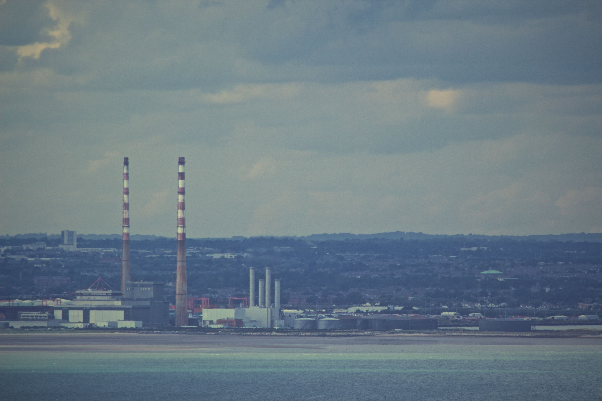

Understanding Dublins Air Quality Crisis
Dublin faces growing air pollution challenges driven by traffic, home heating, industry, and urban development. This site explores the causes, impacts, and possible solutions, supported by real data collected across the city.
Why It Matters
Poor air quality affects public health, contributes to climate change, and disproportionately impacts vulnerable communities living near busy roads and industrial zones.
- Linked to respiratory and cardiovascular illness
- Connected to Dublin's traffic congestion and urban density
- Tied directly to UN Sustainable Development Goals 11 and 13